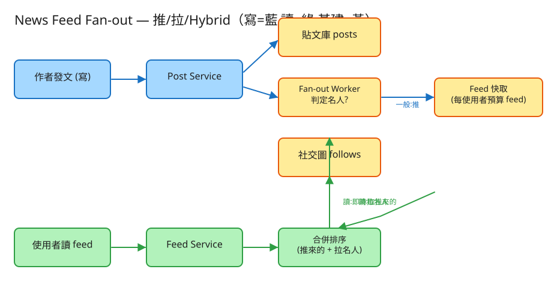

F 社交/Feed 看故事就懂 輕鬆讀 25 分鐘
打開 IG、Threads、臉書，最上面那條一直往下刷、把你追蹤的人最新動態混在一起的牆——那就是 News Feed（動態牆）。 你追蹤了 200 個人，系統要在你一打開 App 的瞬間，把這 200 人最近發的東西，依時間排好端到你面前。
聽起來簡單？難就難在：你不是只有 200 人，是幾億人互相追蹤；而且大家刷的次數遠遠多過發文的次數（你一天發 1 篇，但刷了 50 次）。
這題最核心的取捨，用一個你完全懂的生活經驗就能秒懂——報紙怎麼到你手上。有兩種做法：
News Feed 一模一樣：
💭 停一下：一般人發一篇文，到底有幾個信箱要塞？這個數字大不大，會不會出事？
別被「系統」嚇到。整件事其實就是闖 3 關，一關比一關有趣：
預設大家都用「推」（印好投遞）。你一發文，系統就對你的每一個粉絲，把這篇貼文的編號放進他的信箱（feed 快取）。
推很美好，直到出現有 5000 萬粉絲的名人。他發一篇文，系統要瞬間塞 5000 萬個信箱——這一篇就能把系統拖垮。
所以名人改用「拉」：名人發文時不塞任何信箱，只放在他自己的貼文庫。等你來看 feed，系統才現場去名人那裡拉他的最新貼文。名人人數少、又有快取攤平，這樣就不會被寫爆。
業界真正的做法叫 Hybrid（混合），其實就是把前兩關合起來：
這個「一篇貼文 → 分發給一群粉絲」的動作，工程上就叫 fan-out（扇出）。發文時就分發叫「on write（推）」，讀時才分發叫「on read（拉）」。
工程上的「取捨」聽起來很抽象。換個方式記：這個系統最怕三件事，每個設計都是為了避開某個「怕」。

✏️ 用 Excalidraw 開啟編輯（diagram.excalidraw）白話導讀，分「發文」和「讀牆」兩條路：
看完上面，這些詞你其實都已經懂了，這裡只是把「工程術語 ↔ 白話」對起來，Part 2 會用到：
| 工程術語 | 白話解釋 |
|---|---|
| News Feed | 把你追蹤的人最新貼文合成的那條動態牆 |
| 推 / fan-out on write | 「印好挨家投遞」：發文時就塞進每個粉絲信箱 |
| 拉 / fan-out on read | 「你來報攤現買」：讀時才現場湊一份 |
| Hybrid（混合） | 一般人用推、名人用拉，讀時合併 |
| 名人問題（寫放大） | 千萬粉的人一發文 → 千萬次塞信箱，把寫端塞爆 |
| feed 快取 | 每個人的「信箱」，放推進來的貼文編號 |
| 貼文庫（posts） | 所有貼文內文的唯一真相來源 |
| hydrate（回填） | 拿著編號去貼文庫把內文撈出來顯示 |
| k 路合併 | 把好幾串「各自排好時間」的貼文，併成一條最新的牆 |
| 最終一致 | 新貼文晚個幾秒才出現在牆上，可以接受 |
| QPS | 每秒幾筆請求（衡量「多忙」的單位） |
| API | 系統之間講好的「點餐單」格式：你給我什麼、我回你什麼 |
| cursor（游標分頁） | 記住「上次刷到哪」，下拉時從那裡接著拿 |
我們估幾個關鍵數字（數字不必背，重點是感受它的「形狀」）：
| 估什麼 | 大概數字 | 所以呢？ |
|---|---|---|
| 每天多少人在用 | 2 億人 | 規模很大，單機絕對不夠 |
| 發文（寫）有多頻繁 | 每秒約 230 篇 | 寫其實不多 |
| 刷牆（讀）有多頻繁 | 每秒 2~7 萬次 | 讀比寫多上百倍 → 要把讀做到極快 |
| 一般人發 1 篇要塞幾個信箱 | 約 200 個（平均粉絲數） | 還可以接受，所以一般人用推 |
| 名人發 1 篇要塞幾個信箱 | 最多 5000 萬個 | 會爆！名人一定要改拉 |
💭 停一下：既然推「讀很快」這麼好，為什麼不乾脆全部都用推，連名人也推？
這題只要記住三張「點餐單」：
① 追蹤 / 取消追蹤（改變「誰追誰」的關係）
POST /follow 給我：{ 誰(follower), 追誰(followee) }
DELETE /follow 取消追蹤這只是記下「人和人的追蹤關係」，是後面推、拉都要查的基礎名單。
② 發文（會觸發 fan-out 分發）
POST /posts 給我：{ 作者, 內文 }
我回：201 { 貼文編號, 這篇用 "推" 還是 "拉" }系統收到後會看作者是不是名人，決定要「立刻推進每個粉絲信箱」還是「先放著、等人來拉」。真實系統會非同步處理推這件事——發文 API 先回「收到」，背景再慢慢塞信箱，不讓你卡著等。
③ 讀牆（最高頻、最該快的一張單）
GET /feed?user_id=我&limit=20&cursor=上次刷到哪
我回：{ 一串貼文, 每筆標了 來源:"推來的" 或 "即時拉的", 下一頁游標 }正式系統不會回傳「來源」這欄；這裡刻意露出來，方便你眼睛看到「這筆是事先推好的、那筆是現場拉名人的」——這正是本題 demo 要呈現的重點。cursor 是「書籤」，記住你上次下拉到哪，再往下刷就從那裡接。
每個人一列：使用者ID、是不是名人。粉絲數超過門檻就自動標成名人——這欄直接決定他發文要用推還是拉。
記 (追蹤者, 被追蹤者)。它要從兩個方向查：拉的時候問「我追了誰」、推的時候問「我有哪些粉絲」。所以兩個方向都要建索引，才查得快。
每篇貼文一列：貼文編號、作者、內文、發文時間。內文只存在這一本。
使用者 → [貼文編號, 貼文編號, ...]，只保留最新 N 筆。這是「推」寫入的地方，正式系統用 Redis 放，讀超快。
| 哪裡會塞車 | 怎麼拓寬 |
|---|---|
| 名人發文 → 要塞千萬個信箱 | 名人改拉，根本不塞；他的貼文額外快取，讓所有讀者共用 |
| 發文 API 卡著等「塞完所有信箱」 | 發文只寫貼文庫，塞信箱的工作丟給背景工人非同步做（晚幾秒沒關係） |
| 重度追蹤者：追了上千人，純拉每次都要現湊 | 一般人的部分早就推好了，只需現場拉「少數幾個名人」 |
| 信箱存全部歷史貼文 → 爆量 | 只留最新 N 筆，更舊的退化成拉模型回補 |
| 把貼文推給長期不上線的殭屍粉 | 對不活躍的人改拉，他登入時才現湊，省下大量白做工 |
| 同一篇名人貼文被超多牆引用 | 內文單獨快取一份，每個信箱只存編號，再批次回填 |
「Part 1 的三個怕」是核心取捨。這裡補幾個常被面試官追問的：
讀十遍不如玩一遍。這題有一個真的可以跑的小程式，讓你親眼看到「推 / 拉 / Hybrid」：
# 啟動（在這題的 demo 資料夾裡）
cd demo
php -S localhost:8015 -t public
# 然後瀏覽器打開 http://localhost:8015先不要看答案，自己用講給朋友聽的方式回答看看（講得出來才是真的懂）：
News Feed = 把你追蹤的人最新貼文，又快又新地合成一條牆。
核心比喻：報紙是「印好挨家投遞（推）」還是「你來報攤現買（拉）」。
3 個關卡：① 一般人發文時先推進粉絲信箱（讀快）→ ② 名人會把信箱塞爆，改成讀時才拉 → ③ Hybrid：推來的＋拉名人的，讀時合併排序。
3 個怕：怕讀慢（預設用推）、怕名人塞爆寫端（名人改拉）、怕白做工（不活躍的人也改拉）。
工程細節一句話：讀比寫多上百倍 → 用「點餐單(API)」溝通、發文先回收到再背景推 → 四本筆記本（使用者/追蹤/貼文庫/信箱）＋信箱只存編號 → 找出名人這個塞車環節，用 Hybrid 拓寬。
想看更精簡、面試速查用的版本？👉 前往完整版（同樣內容的工程速查格式）。